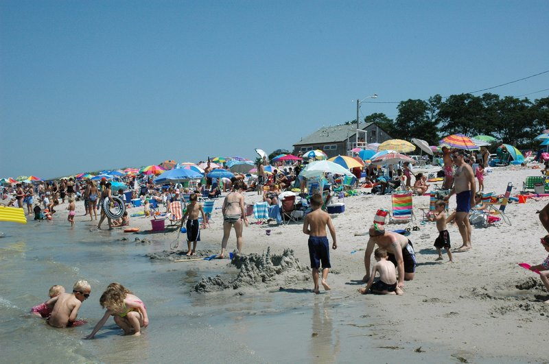
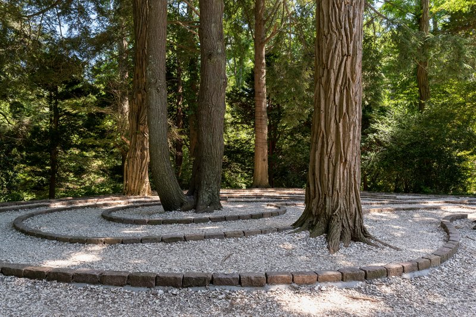

TRIP OVERVIEW
Day 1 – Nauset Light · Seashore · Marconi · Herring Cove
Day 2 – Maritime Museum · Lighthouse · Main Street · Skaket
Day 3 – Glass Museum · Gardens · Wildlife · Windmill
Day 1
🏨 From Hotel: 🚕 25 min → Nauset Light Beach
1. Nauset Light Beach
↳ Iconic red-and-white striped lighthouse stands on dramatic Atlantic cliff since 1923. The beacon rises 120 feet above a sweeping two-mile beach backed by Cape Cod National Seashore dunes.

🚕 8 min → Cape Cod National Seashore
2. Cape Cod National Seashore
↳ A 43,000-acre coastal preserve protecting 40 miles of unspoiled Atlantic beaches. Six major beaches, pitch-pine forests, ponds, marshes, and walking trails form a rare intact coastal ecosystem.
🏛️ Beaches year-round, dawn to dusk
⏰ ~2 hr 30 min

🚕 6 min → Marconi Beach
3. Marconi Beach
↳ High oceanfront bluffs frame this beach marking the historic Marconi wireless telegraph station site from 1903–1917. Wide sandy beach and large parking lot provide easy access with dramatic Atlantic views.

🚕 20 min → Herring Cove Beach
4. Herring Cove Beach
↳ Wide crescent beach on Cape Cod's western edge overlooking the bay, famous for spectacular sunsets. Warm sheltered waters are perfect for swimming with views of sailing vessels and fishing boats entering Provincetown Harbor.

🚕 5 min → hotel
Day 2
🏨 From Hotel: 🚕 15 min → Cape Cod Maritime Museum
1. Cape Cod Maritime Museum
↳ Three centuries of maritime heritage chronicle Cape Cod's global commerce role through ship models, navigational instruments, scrimshaw art, and artifacts from whaling and clipper ship eras.
🏛️ Tuesday - Saturday 10:00am - 4:00pm
🏛️ Sunday 12:00pm - 4:00pm
🚫 Closed Monday
⏰ ~1 hr 30 min
📍 Hyannis

🚕 10 min → Chatham Lighthouse
2. Chatham Lighthouse
↳ Twin red-brick towers stand on dramatic ocean bluff, a beacon since 1808 guiding ships past treacherous Chatham Bars. Offers sweeping Atlantic views and excellent seal spotting opportunities on rocks below.

🚶 3 min · 🚕 1 min → Chatham Main Street
3. Chatham Main Street
↳ Tree-lined street with art galleries, antique shops, bookstores, and restaurants in historic buildings captures classic Cape Cod essence. Water views and relaxed pace make lingering exploration a pleasure.

🚕 5 min → Skaket Beach
4. Skaket Beach
↳ Premier sunset beach facing west across Cape Cod Bay—at low tide the bay recedes revealing a quarter-mile of sand creating perfect tide pools for exploration. Warm calm waters ideal for swimming and families.

🚕 15 min → hotel
Day 3
🏨 From Hotel: 🚕 30 min → Sandwich Glass Museum
1. Sandwich Glass Museum
↳ Sandwich glass pressed in this Cape Cod town 1825–1888 is celebrated in a 6,000-piece collection—delicate dinner sets, ornate vases, candlesticks. Live glassblowing demonstrations show artisans recreating original methods.

🚕 3 min → Heritage Museums & Gardens
2. Heritage Museums & Gardens
↳ One hundred acres of landscaped grounds combine exceptional gardens with diverse art and cultural exhibits—restored 1908 carousel, automobile collection, military artifacts, Wampanoag heritage exhibits, and rotating contemporary art.

🚕 15 min → Wellfleet Bay Wildlife Sanctuary
3. Wellfleet Bay Wildlife Sanctuary
↳ Mass Audubon sanctuary protecting 1,183 acres of diverse ecosystems—salt marshes, freshwater ponds, barrier beach, maritime forests. Five miles of hiking trails provide wildlife observation access with over 309 bird species documented.

🚕 10 min → Eastham Windmill
4. Eastham Windmill
↳ Only surviving post-mill of its kind on Cape Cod was built in Plymouth in 1680 and moved to Eastham in 1793. Authentic structure rotates on central post to catch wind, with summer tours explaining grain-grinding traditions.

🚕 25 min → hotel
🗓️
Museums & Galleries · Closed Monday
📅
Viator
↳ Four-hour van tour visiting five lighthouses with local guide sharing maritime heritage and traditions.
🕐 9:30am · ⏳ 4 hr · 👥 Small group
🚕 15 min
↳ Four-hour naturalist-led hike exploring beach ecosystems and dune ecology.
🕐 9:00am · ⏳ 4 hr · 👥 Small group
🚕 25 min
🫕
The Impudent Oyster · 4.4⭐ · 290+ reviews
↳ Casual seafood bar with fresh oysters, clams, fish tacos, and chowder.
🏛️ Daily 11:30am - 9:00pm
📍 Chatham
🚶 3 min
Red Roof Cafe · 4.3⭐ · 125+ reviews
↳ Upscale American casual with fresh catch, steak, and pasta in historic cottage.
🏛️ Tuesday - Saturday 5:00pm - 9:30pm
📍 Chatham
🚕 5 min
🍽️
No exceptional restaurants identified in historic downtown Cape Cod.
🍮
Fresh lobster rolls and steamed clams are Cape Cod essentials · order at any waterfront seafood shack. Raw oyster bars and chowder houses along Main Street reflect the region's fishing heritage. Cranberry-based desserts appear on nearly every menu.
🚗
No food delivery services available on Cape Cod. The region relies on local restaurants and seafood shacks rather than third-party delivery platforms.
🎭
Chatham Orpheum Theater · 4.7⭐ · 185+ reviews
↳ Historic theater with live performances, movies, and cultural events. Check website for summer schedule.
📍 Chatham
🚶 4 min
🚌
Taxis · Chatham Taxi 508-945-0068 · Hyannis Taxi 508-775-0011
🚆
No regional rail access on Cape Cod.
⛲️
No train service from Cape Cod to regional destinations.
⭐
No Michelin-starred restaurants in Cape Cod.
❗️
Parking fees · Beach parking is $25–$32.50 per day during peak season. Arrive early or visit after 4:30pm for free parking.
Peak season · July and August bring crowds; June and September offer easier access and mild weather. Most museums close Mondays.